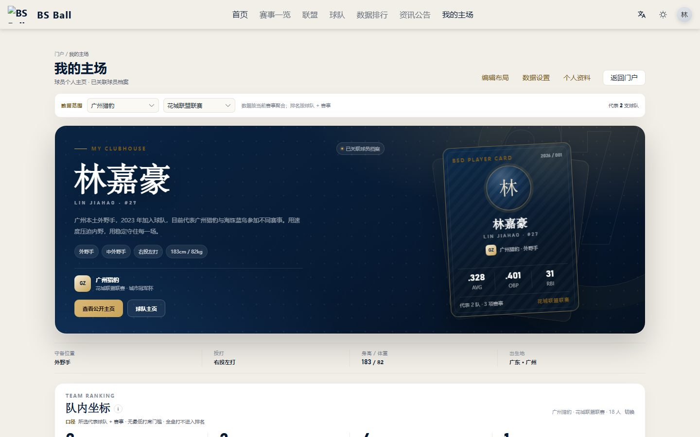
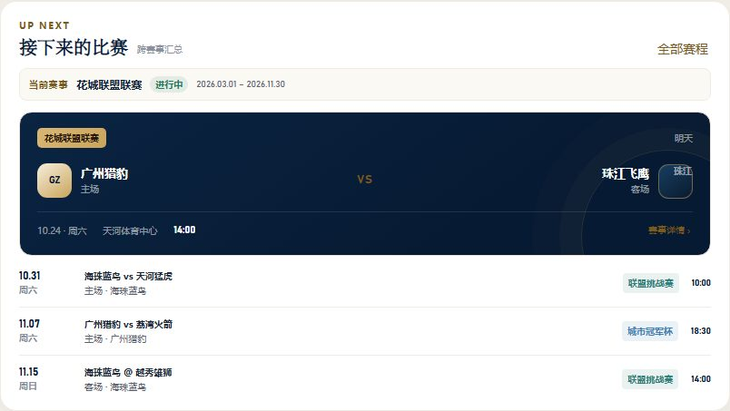
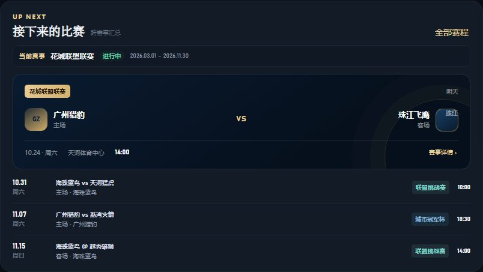
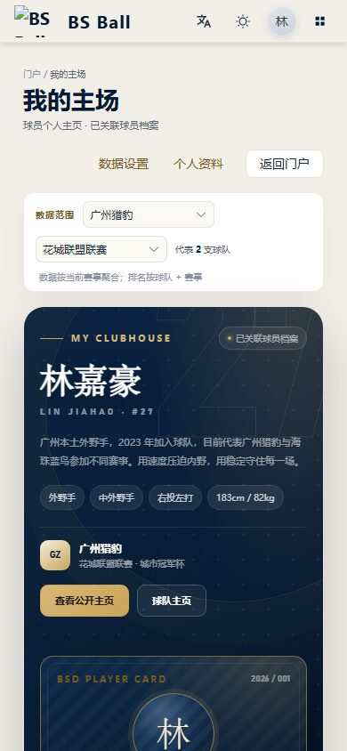
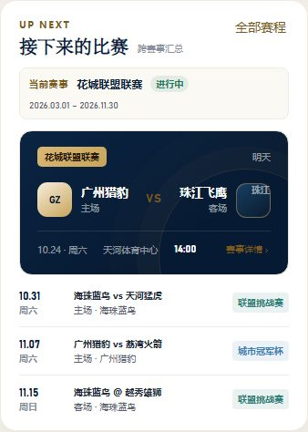
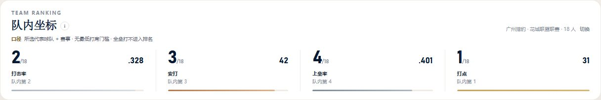

个人驾驶舱 · 细节优化高保真
顶部恢复球星卡；当前赛事与下一场比赛移入「接下来的比赛」模块。以下为桌面/手机、浅色/深色。
桌面 · 浅色 · 顶部（球星卡优先）

桌面 · 浅色 · 接下来的比赛（当前赛事 + 下一场）

桌面 · 深色 · 接下来的比赛

手机 · 浅色 · 顶部

手机 · 浅色 · 接下来的比赛

桌面 · 浅色 · 队内坐标（字号、口径说明、信息入口）
